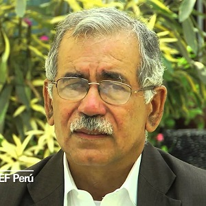

[1] Web cuídate plus (2016). Anemia. [Online] Disponible en: https://cuidateplus.marca.com/enfermedades/enfermedades-vasculares-y-del-corazon/anemia.html
ANEMIA: Nos brinda información acerca de que es la anemia y cuáles son sus causas, tipos y la prevención de la misma.
[2] Gobierno del Perú. (2017). Encuesta Demográfica y de Salud Familiar. 2018, de Instituto Nacional de Estadística e Informática. [Online] Disponible en: https://www.inei.gob.pe/media/MenuRecursivo/publicaciones_digitales/Est/Lib1525/index.html
ENCUESTA DEMOGRÁFICA Y DE SALUD FAMILIAR: Encontraremos información acerca de una encuesta realizada en las viviendas del país en el año 2017.
[3] Hernández, A., Azañedo, D., Antiporta, D., & Cortés, S. (2017). Análisis espacial de la anemia gestacional en el Perú. 2018, de Scielo Perú. [Online] Disponible en: http://www.scielo.org.pe/scielo.php?script=sci_arttext&pid=S1726-46342017000100007
EFECTO DE LA ANEMIA EN EL DESARROLLO INFANTIL: CONSECUENCIAS A LARGO PLAZO: Un documento en el que podemos encontrar una pequeña introducción de que es la anemia y los porcentajes de este alrededor del mundo, ya sea en niños o en madres gestantes. Del mismo modo podemos encontrar información de los efectos que la anemia produce.
[4] Stevens GA, Finucane MM, & De-Regil LM. (2018). Prevalencia de anemia entre embarazadas (%). 2018, de Banco Mundial. [Online] Disponible en: https://datos.bancomundial.org/indicador/SH.PRG.ANEM?year_high_desc=true
PREVALENCIA DE ANEMIA ENTRE EMBARAZADAS (%): En esta página encontraremos los porcentajes de anemia de embarazadas a nivel mundial y una diferencia de las mismas en una comparación de años.
[12] Zavaleta, N. & Astete-Robilliard, L. (2017). Efecto de la anemia en el desarrollo infantil: consecuencias a largo plazo. Septiembre 17, 2018, de Revista Peruana de Medicina Experimental y Salud Pública. [Online] Disponible en: https://rpmesp.ins.gob.pe/index.php/rpmesp/article/view/3346/2902
Efecto de la anemia en el desarrollo infantil: consecuencias a largo plazo. Es un artículo de la Revista Peruana de Medicina Experimental y Salud Pública donde se aborda de manera profunda los efectos a largo plazo de la anemia por deficiencia de hierro en los niños y la explicación de estos efectos. Del artículo se extrajo información sobre el deterioro cognitivo durante el crecimiento debido a este tipo de anemia.
[13] MedlinePlus. (agosto 31, 2018). Mielina. Septiembre 17, 2018, de Biblioteca Nacional de Medicina de los Estados Unidos. [Online] Disponible en: https://medlineplus.gov/spanish/ency/article/002261.htm
Mielina. Es una entrada de MedlinePlus, una página web con información de la salud. La entrada explica el rol que cumple la mielina en el cerebro. Se usó esta entrada ya que era importante en la explicación del deterioro cognitivo.
[14] García-Allen, J. (2018). Tipos de neurotransmisores: funciones y clasificación. Septiembre 17, 2018, de Psicología y Mente. [Online] Disponible en: https://psicologiaymente.com/neurociencias/tipos-neurotransmisores-funciones
Tipos de neurotransmisores: funciones y clasificación. Es una entrada de la página web Psicología y Mente, en ella se explica el concepto de neurotransmisores. Esto fue relevante para la explicación del deterioro cognitivo a causa de la anemia por deficiencia de hierro.
[15] Gobierno del Perú. (2010). Esperanza de vida escolar (número de años). 2018, de Ministerio de Educación. [Online] Disponible en: http://escale.minedu.gob.pe/tendencias;jsessionid=eb2ab3fe0a1f348882fa0450d93d?p_auth=i3HFde9a&p_p_id=TendenciasActualPortlet_WAR_tendenciasportlet_INSTANCE_90Hs&p_p_lifecycle=1&p_p_state=normal&p_p_mode=view&p_p_col_id=column-1&p_p_col_pos=1&p_p_col_count=2&_TendenciasActualPortlet_WAR_tendenciasportlet_INSTANCE_90Hs_idCuadro=201
Esperanza de vida escolar (número de años). Gráfico extraído del Ministerio de Salud donde se hace una proyección de los años que los pobladores de definidas solas permanecerán en el colegio hasta antes de culminar sus estudios. Se usó este gráfico para hacer la relación de esto con la deficiencia cognitiva a largo plazo causada por la anemia.
[16] Gobierno del Perú. (2016). Nivel educativo alcanzado. 2018, de Instituto Nacional de Estadística e Informática. [Online] Disponible en: https://www.inei.gob.pe/estadisticas/indice-tematico/education/
Nivel educativo alcanzado. Gráfico extraído del Instituto Nacional de Estadística e Informática en el cual se recopiló información sobre el grado de educativo alcanzado en las diferentes zonas de nuestro país por ciudadanos mayores a 15 años. Se usó este gráfico para hacer relación con la deficiencia cognitiva causada por la anemia por deficiencia de hierro.
CIELO
[17] Sardo, P. (2018). ¿QUÉ ES EL DESARROLLO MOTOR? - Rehabilitación Premium Madrid. [Online] Disponible en: https://rehabilitacionpremiummadrid.com/blog/patricia-sardo/que-es-el-desarrollo-motor/
De este sitio web se pudo obtener información específica sobre la defición del desarrollo motor de una persona para así tener un mejor entendimiento de ello.
[18] Zavaleta, N., & Astete-Robilliard, L. (2017). Efecto de la anemia en el desarrollo infantil: consecuencias a largo plazo. [Online] Disponible en: https://rpmesp.ins.gob.pe/index.php/rpmesp/article/view/3346/2924
Se encontró información sobre el efecto que tiene la anemia en el desarrollo infantil y las consecuencias que están conllevan a largo plazo.
[19] L. Alcázar, "Impacto Económico de la Anemia en el Perú", Slack-files.com. [Online] Disponible en: https://slack-files.com/files-pri-safe/TCH9ST8HJ-FCJEUJX3P/librograde_anemia_1_.pdf?c=1537324345-63347bf98f1147aaf9a5737d182ab517c390048d.
Este en un libro del 2012 donde se encuentra información del impacto económico de la anemia para nuestro país, en específico se obtuvo información sobre el impacto económico de la productividad laboral.
[20] El Universal web (2018). Niños con poco hierro pueden tener conductas agresivas. [Online] Disponible en: http://www.elbotiquin.mx/salud-mental/ninos-con-poco-hierro-pueden-tener-conductas-agresivas
NIÑOS CON POCO HIERRO PUEDEN TENER CONDUCTAS AGRESIVAS: Encontramos información de los posibles efectos que puede producir la anemia en el ámbito conductual en niños, estos efectos se presentan como problemas.
[21] Cuídate. (2018). Alimentos ricos en hierro. Octubre 21, 2018, de Unidad Editorial Revista. [Online] Disponible en: https://cuidateplus.marca.com/alimentacion/diccionario/alimentos-ricos-hierro.html
Alimentos ricos en hierro. Entrada web de la página Cuídate Plus, en esta se mencionan los alimentos ricos en hierro y sus cantidades en mg por cada 100 gramos de comida. Esto se usó para demostrar que el hierro obtenido por comidas de origen animal era superior al de origen vegetal y del porqué la dieta peruana presenta una deficiencia en esto.
[22] Bernácer, R. (2018). Alimentos ricos en hierro. Octubre 21, 2018, de WebConsultas. [Online] Disponible en: https://www.webconsultas.com/dieta-y-nutricion/nutricion-y-enfermedad/alimentos-ricos-en-hierro-3789
Alimentos ricos en hierro. Entrada de la página web de medicina WebConsultas, en la cual se incluían los alimentos que perjudican en la correcta absorción del hierro. Se usó para des mostrar por qué la dieta peruana presentaba una deficiencia en la absorción de hierro.
[23] Gobierno del Perú. (2017). Plan Nacional para la reducción y control de la anemia materno infantil y la desnutrición crónica infantil en el Perú 2017-2021. Octubre 21, 2018, de Ministerio de Salud. [Online] Disponible en: http://bvs.minsa.gob.pe/local/MINSA/4189.pdf
Plan Nacional para la reducción y control de la anemia materno-infantil y la desnutrición crónica infantil en el Perú 2017-2021. Ensayo del Ministerio de Salud donde se explica el plan del estado para reducir la anemia infantil. De este se extrajo un gráfico en el cual se veía como la mayor parte del hierro consumido por la población es de procedencia vegetal. Esto formo parte de la primera causa de la anemia expuesta en nuestro trabajo: malos hábitos alimenticios.
[24] National Institutes of Health. (2016). Hierro. Octubre 21, 2018, de Health Information. [Online] Disponible en: https://ods.od.nih.gov/factsheets/Iron-DatosEnEspanol/
Hierro. Entrada del Instituto Nacional de Salud de los Estados Unidos donde se explica la importancia del consumo de hierro. Se usó información de un cuadro para demostrar que la cantidad de hierro consumida en el Perú no es suficiente.
[25] MINSA.gob (2018). Presencia de parásitos intestinales en niños favorecen la anemia y la desnutrición crónica. [Online] Disponible en: https://www.gob.pe/institucion/minsa/noticias/19429-presencia-de-parasitos-intestinales-en-ninos-favorecen-la-anemia-y-la-desnutricion-cronica
Se encontró la correlación entre la anemia y los parásitos (debido a malos hábitos higiénicos)
[26] A. Jaramillo, M. Vergara (2017). PREVALENCIA DE PARASITOSIS INTESTINAL Y ANEMIA EN NIÑOS BENEFICIARIOS DEL PROGRAMA VASO DE LECHE DE LA MUNICIPALIDAD DISTRITAL DE PATAPO –LAMBAYEQUE. [Online] Disponible en: https://www.google.com.pe/url?sa=t&rct=j&q=&esrc=s&source=web&cd=11&cad=rja&uact=8&ved=2ahUKEwjh2YPVpZneAhXnYN8KHeuTDakQFjAKegQICBAC&url=http%3A%2F%2Frevistas.uss.edu.pe%2Findex.php%2FSVS%2Farticle%2Fdownload%2F695%2F608%2F&usg=AOvVaw3cOEE_ikJhBigimuJhklHW
Un estudio realizado en Lambayeque en el que se muestra las estadísticas de niños con parasitos y niños con anemia.
[27] GARAYCOCHEA O, ACOSTA-GARCÍA G, VIGO-AMES N, HERINGMAN K, DYER A, JERÍ S y SIANCAS G (2012). Parasitismo intestinal, anemia y estado nutricional en niños de la comunidad de Yantaló, San Martín, Perú. [Online] Disponible en: http://www.parasitaria.org/journal/download/pdf/id/117
Un estudio realizado en el departamento de San Martin en el cual muestra la cantidad de niños con anemia y niños con parásitos.
[28] Bupa (2011). TEMAS DE SALUD. [Online] Disponible en: https://contenidos.bupasalud.com/salud-bienestar/vida-bupa/anemia-ferrop%C3%A9nica#Diagn%C3%B3stico%20de%20la%20anemia%20ferrop%C3%A9nica
ANEMIA FERROPÉNICA: Nos muestra una pequeña introducción de lo que es la anemia ferropénica y cómo afecta en nuestras vidas, así como también cual es el proceso de diagnóstico y los tratamientos.
[29] tuasaude (2018). ¿Qué significa cuando los valores de hemoglobina están alterados? [Online] Disponible en: www.tuasaude.com/es/hemoglobina/
¿QUÉ SIGNIFICA CUANDO LOS VALORES DE HEMOGLOBINA ESTÁN ALTERADOS?: Encontramos información hacer de qué es la hemoglobina, cuales son los tipos y las posibles causas de tener hemoglobina alta o baja.
[30] SOCIAL, C. C. (2015). Ajuste a la hemoglobina para diagnóstico de anemia según la altitud. [Online] Disponible en: //www.binasss.sa.cr/serviciosdesalud/anemia.pdf
AJUSTE A LA HEMOGLOBINA PARA DIAGNÓSTICO DE ANEMIA SEGÚN LA ALTITUD, EN NIÑOS Y NIÑAS DE 6 A MENOS DE 24 MESES, ATENDIDOS EN EL PRIMER NIVEL DE LA CAJA COSTARRICENSE DE SEGURO SOCIAL, EN EL AÑO 2015: Es un documento acerca de una investigación realizada para comparar que los niveles de hemoglobina varían según el territorio geográfico y que haciendo uso de un ajuste numérico se puede determinar un diagnóstico preciso de la anemia a través de la hemoglobina.
[31] Mayo Clinic (2017). Anemia - Diagnóstico y tratamiento. [Online] Disponible en: https://www.mayoclinic.org/es-es/diseases-conditions/anemia/diagnosis-treatment/drc-20351366
De esta página pudimos obtener información sobre los distintos tipos de anemia existentes a nivel mundial.
[34] Bvs.minsa.gob.pe. (2018). [Online] Disponible en: http://bvs.minsa.gob.pe/local/MINSA/4189.pdf
Este es un documento técnico del Plan Nacional para la reducción y control de la anemia materno infantil y desnutrición crónica infantil en el periodo 2017-2021. De este documento pudimos obtener información sobre los objetivos y actividades que tiene el Estado para prevenir y disminuir la prevalencia de anemia en nuestro país.
[35] Banco mundial (2011), prevalencia de anemia. [Online] Disponible en: https://datos.bancomundial.org/indicator/SH.ANM.ALLW.ZS?view=chart
PREVALENCIA DE ANEMIA ENTRE MUJERES EN EDAD FÉRTIL (% DE MUJERES DE ENTRE 15 Y 49 AÑOS): Información acerca del porcentaje de prevalencia de anemia en el mundo, y como este ha ido cambiando con el paso de los años.
[36] Scielo (2011), Nutrición de los niños en Chile. [Online] Disponible en: https://scielo.conicyt.cl/scielo.php?script=sci_arttext&pid=S0370-41062001000100001
NUTRICIÓN DE LOS NIÑOS EN CHILE: DÓNDE ESTAMOS, HACIA DÓNDE VAMOS: Documento que recopila información acerca del número de personas con anemia y obesidad de Chile y hacia donde están apuntando llegar, es decir, cuales son los mecanismos que están pensando emplear para reducir el porcentaje de personas con estos desequilibrios nutricionales.
[37] La tercera (2015), Chile el país con menos niños desnutridos pero el segundo con más obesos en la región. [online]Disponible en: http://www2.latercera.com/noticia/chile-el-pais-con-menos-ninos-desnutridos-pero-el-segundo-con-mas-obesos-en-la-region/
CHILE, EL PAÍS CON MENOS NIÑOS DESNUTRIDOS PERO EL SEGUNDO CON MÁS OBESOS EN LA REGIÓN: Una noticia que nos informa que pese a que Chile tenga niveles bajos de anemia en su población presenta índices altos de obesidad.
[38] M. Castillo, A. Mora, A. Munévar (2009), Detección de deficiencias subclínicas de hierro a partir del índice receptor soluble de transferrina-ferritina en niños sanos de 1 a 10 años de edad residentes en alturas de 300 y 2600 msnm. [Online] Disponible en: www.unicolmayor.edu.co/invest_nova/NOVA/artorig6_NOVA11.pdf
Es un paper en el que se sacó el porcentaje de niños con anemia en Colombia.
[39] Macdougall IC, Bock AH, Carrera F, Eckardt KU, Gaillard C, Van Wyck D, Roubert B, Nolen JG, Roger SD (2014).A randomized trial of intravenous ferric carboxymaltose versus oral iron in patients wih chronic kidney disease an iron deficiency anaemia. [Online] Disponible en: www.ncbi.nlm.nih.gov/pubmed/24891437
Es un estudio que compara la eficacia del tratamiento de hierro oral con el tratamiento a travez de intravenosa.
[40] Bailie GR, Larkina M, Goodkin DA, Li Y, Pisoni RL, Bieber B, Mason N, Tong L, Locatelli F, Marshall MR, Inaba M, Robinson BM (2013). Variation in intravenous iron use internationally and over time: the Dialysis Out comes and Practice Patterns Study. [Online] Disponible en: www.ncbi.nlm.nih.gov/pubmed/24078642
Se compara a nivel internacional la eficacia del tratamiento por falta de hierro por via intravenosa.
[41] Alfonso L, Arango D, Argoty D, Ramírez L, Rodríguez J (2017).Anemia ferropénica en la población escolar de Colombia. Una revisión de la literatura. [Online] Disponible en: https://www.google.com.pe/url?sa=t&rct=j&q=&esrc=s&source=web&cd=1&ved=2ahUKEwi56dPui5neAhXJjFkKHdhZBmsQFjAAegQICBAC&url=http%3A%2F%2Fhemeroteca.unad.edu.co%2Findex.php%2FBiociencias%2Farticle%2Fdownload%2F2236%2F2400&usg=AOvVaw0LDykpP5lBqcc-JNf26i0d
Aquí se encuentra el porcentaje de escolares con anemia.
[42] MINSALUD (2014). ESTRATEGIA NACIONAL PARA LA PREVENCION Y CONTROL DE LAS DEFICIENCIAS DE MICRONUTRIENTES EN COLOMBIA (2014-2021) Pág. 9. [Online] Disponible en: https://www.minsalud.gov.co/sites/rid/Lists/BibliotecaDigital/RIDE/VS/PP/SNA/Estrategia-nacional-prevencion-control-deficiencia-micronutrientes.pdf
Se saca la información básica sobre los el plan nacional de seguridad alimentaria y nutricional y la ESTRATEGIA NACIONAL PARA LA PREVENCION Y CONTROL DE LAS DEFICIENCIAS DE MICRONUTRIENTES.
[43] Wang, C. (2016). Hierro intravenoso (IV) para la deficiencia grave de hierro. Octubre 21, 2018, de Therapeutics Initiative. [Online] Disponible en: https://www.ti.ubc.ca/es/2016/05/30/97-hierro-intravenoso-iv-para-la-deficiencia-grave-de-hierro/
Hierro intravenoso (IV) para la deficiencia grave de hierro. Entrada de una asociación canadiense. En ella se explica cómo es el control de la anemia por deficiencia en Canadá. Se eligió una solución de este país ya que es de los países que menor prevalencia de anemia presenta en el mundo.
[44] VMNIS. (2011). Concentraciones de hemoglobina para diagnosticar la anemia y evaluar su gravedad. Octubre 21, 2018, de Organización Mundial de la Salud. [Online] Disponible en: http://www.who.int/vmnis/indicators/haemoglobin_es.pdf
Concentraciones de hemoglobina para diagnosticar la anemia y evaluar su gravedad. Artículo de la Organización Mundial de la Salud donde se explican los parámetros de diagnóstico y se provee información a la población sobre cómo prevenir esta enfermedad y a su vez de los recursos a los que pueden acceder. Es el método de control de anemia de los Estados Unidos, se eligió ya que es otro de los países con menor prevalencia de anemia en el mundo.
Dra. Maria Marull
Jefa de la carrera de Nutrición UPCH
La Dra. María hablo sobre la anemia desde un aspecto nutricional. Empezó comentando que la anemia por falta de hierro en nuestro país es aproximadamente un 50%, y que por parte del Estado algunos de estos niños afectados reciben es la “chispita”; que muchas veces no la consumen, puesto que sufren de diarreas, les da un mal sabor a las comidas, etc. Que en muchos casos las mismas madres no les dan.
Prosiguió comentando sobe los pasos que se siguen para combatir la anemia en el Perú:
1. Entrega por parte del Estado de multimicronutrientes llamados “chispitas”, que se les entrega aproximadamente 180 sobres, esta entrega cuenta con 2 supervisiones una a la mitad del consumo y la otra al final. Estos micronutrientes son máximo entregados hasta los 3 años.
2. Fortificación de alimentos de consumo masivo, en el mercado ya se encuentra la harina fortificada con hierro y próximamente se encontrará en el mercado el arroz fortificado.
3. Suplementación con gotas o jarabes.
Otro punto que trato fue la evaluación para el diagnóstico que se lleva a cabo en nuestro país. Que en gran parte de los casos es solo la evaluación de la hemoglobina (menor a 11mg/dL significa que se tiene anemia), que en muchos casos con solo ese diagnóstico no bastaría para estar 100% seguros que es un diagnóstico correcto de anemia ferropénica. Para ello indicó que es necesario realizar a los pacientes que presentan hemoglobina menos a 11mg/dL una evaluación de ferritina, que en muchos casos se les recomienda, pero los pacientes no se la realizan puesto que esta solo se realiza en laboratorios y las respuestas son de aproximadamente una semana que a muchos les parecen incomodas.
También hablo sobre las consecuencias de tener una cifra significante de anémicos en nuestro país, que estas son sobre todo perdidas económicas para el Estado. Por último, dijo que la anemia no es solo un problema de salud sino de familia, sociedad, cultura, políticas del ministerio e investigación.

Dr. Mario Tavera
Consultor en programas de salud materno infantil
Según el doctor, la OMS indicó que el 20% del mundo tiene anemia. El Perú presenta un 34% de anemia en su población y con esto ocupa el cuarto lugar de los países con prevalencia de anemia, seguidos de Haití, Guatemala y Bolivia. Pero se cree que posiblemente estas conclusiones esten equivocadas por existir un error en el diagnóstico. Se habla de error de diagnóstico por diversos aspectos, uno de los más resaltantes es el mal uso del “hemokiu”, un aparato que es utilizado hoy en día para diagnosticar la anemia en una persona. Se cree que este aparato podría dar posibles errores de diagnóstico, y a su vez el personal encargado de su utilización muchas veces no está capacitado adecuadamente para hacer un uso correcto de este, es decir, no saben cómo utilizar tal aparato ni como calibrarlo. Por estos aspectos se cree que pueda existir un posible error en los porcentajes de la población con anemia. Se cree que por este tipo de fallas el verdadero porcentaje disminuiría, no obstante no quiere decir que nuestro país no presente anemia en su población; los porcentajes podrían disminuir en poca cantidad lo cual indicaría que sigue existiendo un alto índice de anemia en el país.
Dra. Delia Haustein
Directora Ejecutiva ONG Prisma
Entre los datos más importantes a destacar se encuentra el problema de la dieta peruana. Como explicaron los gráficos, el principal problema de esta es que es deficiente en hierro. El estándar más bajo se encuentra en la región Selva, siguiendo la Sierra y por último la costa. La cantidad de hierro que una persona debe consumir, en el caso de los niños de 6 a 11 meses es 6 mg al día, de 1 a 6 años de 4 mg al día y de 7 a 10 años necesitan 6 mg al día; en el caso de los hombres de 11 a 14 años requieren 10 mg al día, de 15 a 17 años 13 mg al día y de más de 18 años 9 mg al día. En cuanto a las mujeres, que requieren una cantidad mayor, de 11 a 14 años necesitan 18-22 mg al día, de 15 a 17 años 17-22 mg al día y más de 18 años 16-20 mg al día.
Por último, se mencionaron los alimentos con su contenido en miligramos de hierro por cada 100gr. Los de mayor proporción son las almejas, que presentan 24 mg, la sangre de 22 a 29 mg, la carne de 4 a 3 mg, la morcilla 4 mg, las vísceras 6 mg, el pescado de carne roja 8 mg. Los de menor proporción son los huevos que tienen 2.5 mg, la leche y queso 0.5 a 2 mg, las habas y lentejas de 13 a 8 mg, el arroz 1 mg, las nueces y pecanas de 4 a 7.3 mg y las espinacas 4 mg.